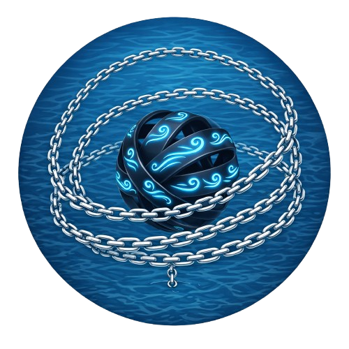

Basit bileşimlerden biri: Çam kabuğunu ve bir teteran otu yaprağını suyun içine atıp kaynat. Sonra süz. Elde ettiğin mavi sıvı mavimdir.
bir avuç su perisi tozu talon zehirli sarmaşığının zehrinde çözdürülür. kenara ayırılır. Yaban mersinlerinin çekirdekleri çıkartılır. Çekirdekler ezilerek yağları çıkartılır. Bir erdamoz kartalı tüyü çıkartılan yağa bandırılır ve yağı emer. Su perisi tozu + zehir çözeltisi suya eklenir, hemen ardından yağı emmiş tüy karışıma atılır. (talon zehri kullanılmazsa tüy karışıma değdiği anda sıvıbuz donar. zehrin miktarı karışımın donması için gerekli şiddetin miktarıyla doğru orantılıdır.)
Mavim + Kaynatılmış üzüm suyu (bir kere kaynatılmış olması yeter. sonrasında geri soğusada çalışır. Tabi mavim kaynarken dökülürse daha güçlü olur.)